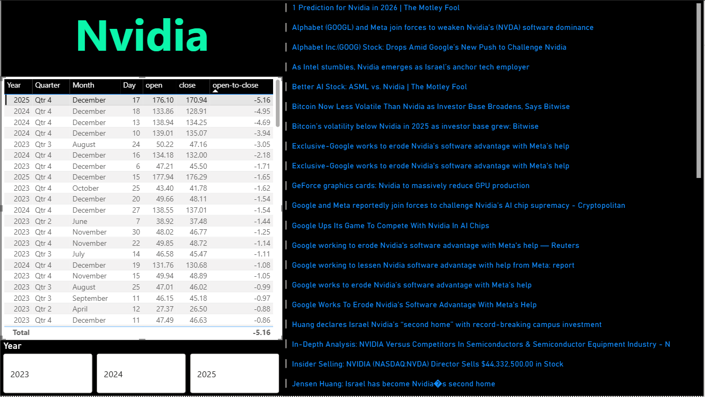
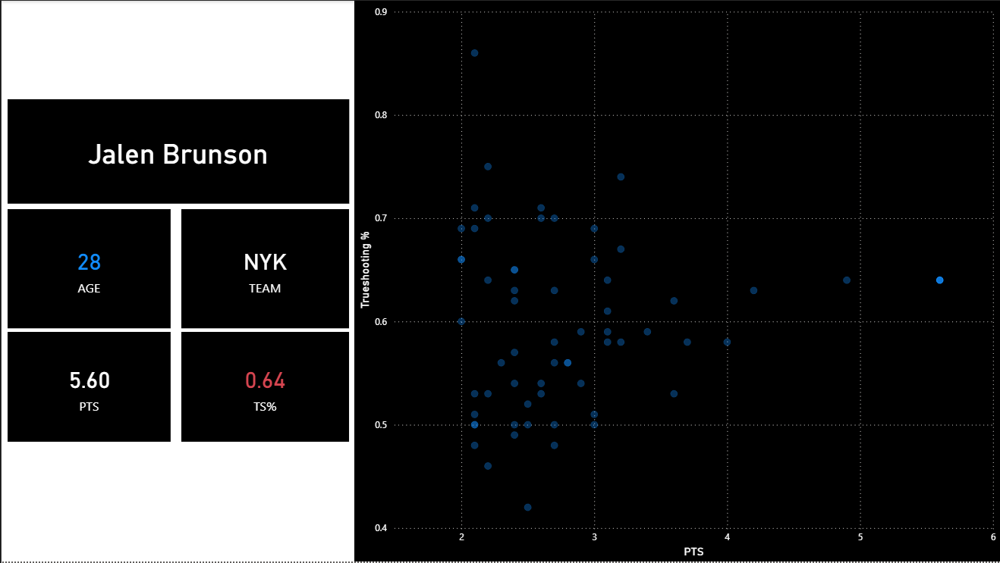
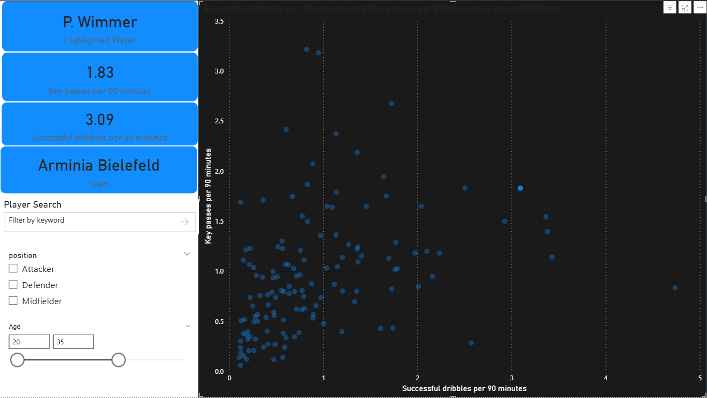

Hoang Le
Data / Analytics Portfolio
Correlation Between the Media and a Company's Stock
Situation: Explore whether or not the media has an effect on the stock prices of a company. Specifically, the headlines, which is the only part of a media source that most read.
Task: Analyze daily stock data of Nvidia from 2023 to 2025 and determine big changes in stock prices from open to close and analyze titles and keywords in new medias posted the same day.
Action: Extracted Nvidia's stock price history and news media regarding the company through multiple APIs using Python. Results are exported into a .CSV file and imported into PowerBI. Using PowerBI's power query to transform the data and merge the data on the table key of the date. Create a dashboard with a table that can filter and showcase the biggest dips or increase in Nvidia's open-to-close prices and the media sources that appears on that same day.
Result: There isn't a clear bottom line. When the open-to-close differential is at the biggest, there are a mixed of positive and negative headlines. When the open-to-close differential is at its worst, all the headlines are negative towards the company. It could be concluded that it's much easier to negatively affect the stock with headlines than it is to affect it positively.
Tools: Visual Studio Code, Python, PowerBI
NBA Most Clutch Player
Situation: In professional sports, many athletes exceed their own limits when under pressure. Performances under these immense pressure are called the "clutch." This project aims to analyze professional basketball players in the NBA 2024-2025 regular season who performs the best in the clutch.
Task: Analyze data from the NBA 2024-2025 season and determine who has the highest trueshooting percentage and points scored in the last 5 minutes and when the points differential is at 5 or less.
Action: Extracted data from all NBA players using the NBA.com APIs using Visual Studio Code and written in Python. Exported to a .CSV file for import into PowerBI. Used Power Query in PowerBI to clean data and transform data. Many players are filtered out due to not meeting the threshold for certain statistics such as shots taken in the clutch, total minutes played in the clutch in a season, etc. The dashboard includes a scatter plot with the x and y-axis for points and trueshooting percentage, respectively. The more a player is closer to the top, right corner of the scatter plot, indicates the more points and efficient they are in the clutch.
Result: The three most clutch players in the NBA for during the 2024-2025 regular based on the data were: 1. Jalen Brunson 2. Tyrese Maxey 3. Nikola Jokic.
Tools: Visual Studio Code, Python, PowerBI
Finding the Key Player
Situation: In previous eras, players' individual brillance shined as they were allow to express themselves on the pitch. In the modern era, players had become robotic and simply became another piece of a whole system. This worked well but the trend has started to circle back to what it was before. Players being robotic and not trying to take risks has been the cause of weakness for many teams. It's not important once again to find a player that is willing to take on their man or make that risky pass to open up the opposition.
Task: Analyze data and determine which player has the highest key passes and successful dribbles per 90 minutes to find that key player that every team needs.
Action: Extract data using API connector in Excel, pulling data from a soccer API. Data is cleaned and transformed in Power BI using Power Query. Created a dashboard that contains a dot graph that has successful dribbles per 90 and key passes per 90 as x and y axis, respectively. There are also cards that shows the player's name, key passes per 90, successful dribbles per 90, and team. There is a search bar to search for a specific player and filters for positions and age.
Result: The three players who excels at the two statistics observed in this project are Rafael Leão, Patrick Wimmer, and Bastian Oczipka for attackers, midfielders, and defenders, respectively.
Tools: Excel, Python, PowerBI